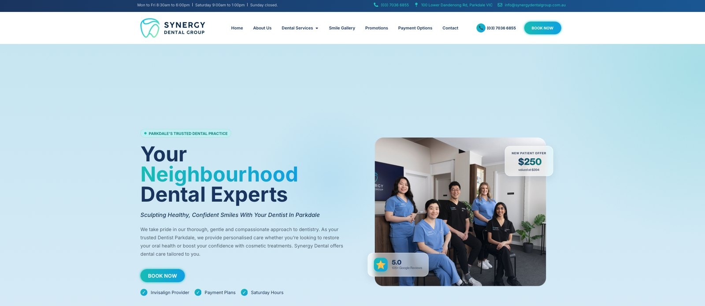
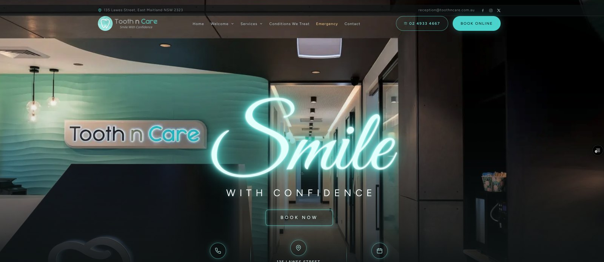

![Generate Your Audience]()
Executive
summary.
A new practice has one advantage no established clinic can buy back: nothing to undo. No legacy website, no stale Google listing, no ten-year-old brand, no bad reviews to bury. It also has one disadvantage no amount of clinical skill fixes on opening day — nobody in Warrnambool knows you exist yet.
This proposal is built around closing that second gap before late October, not after it. Fourteen weeks out, the practice is a fit-out. On opening day it needs to be a name people in Warrnambool, Port Fairy, Koroit and Terang already recognise, with a diary that has appointments in it from week one — not a slow twelve-month drift toward break-even while the fixed costs of two chairs run regardless.
The commercial reality of a greenfield dental practice is unforgiving in one specific way: the cost base arrives fully formed on day one and the revenue does not. Rent on a main-street CBD tenancy, the CBCT, the chairs, the staff — all of it is running at 100% from the first Monday. Chair utilisation is what has to catch up, and every week of empty chair time in the ramp is a permanent, unrecoverable loss. Marketing that starts on opening day is already six weeks late.
What follows is a complete program:
- A website built for a practice that doesn't exist yet — designed to rank, to convert, and to be quotable by AI search engines from the moment it's indexed, with a pre-opening waitlist mode that flips to a full booking site on opening day.
- A local and AI search foundation — Google Business Profile created and verified early so it starts ageing before you open, full schema markup, town-level landing pages across the Great South Coast catchment, and a deliberate program to become one of the practices AI assistants name when someone asks "who's a good dentist in Warrnambool".
- A paid acquisition program — Google Ads and Meta, live before opening, sized to two chairs and weighted toward the services where the economics justify it: implants, cosmetic, root canal and new-patient general.
- A six-week pre-opening launch campaign — a week-by-week execution plan from T−6 to opening day, covering local press, community groups, referral relationships, the fit-out content series, the waitlist, and a launch event. Detailed in §11.
- A patient retention engine from day one — SmileOx CRM configured before the first patient walks in, so recalls, reminders, review requests and reactivation are running from patient number one rather than being retrofitted in year three.
You will open with zero Google reviews against an incumbent with more than five hundred. That fight is unwinnable in year one — so don't have it.
Warrnambool Dental holds a 4.8 average across 530+ Google reviews. Warrnambool Smile Dental holds 4.9 across 280+. Review volume is the dominant ranking factor in the local map pack and the dominant trust signal for a patient choosing between two names. You cannot close a 500-review gap in twelve months, and any strategy that depends on doing so will fail. The entire year-one plan is therefore built on the three levers where review count is not the deciding factor: physical proximity (you will be the closest dentist to the CBD), paid search (the auction is bought, not earned), and AI answer citation (where a well-structured new site can outrank a high-authority old one). Reviews get built relentlessly in the background — but nothing in the first year is allowed to depend on them.
The engagement has three parts: a one-off website build, a one-off pre-opening launch program, and a monthly retainer tier — Foundation, Growth or Scale. For a brand-new practice we recommend Scale, and §13 explains why Foundation is the wrong choice for a clinic with no patient base. Paid media spend on Google and Meta is always paid directly by the practice to the platforms; GYA never marks up media.
No general dental practice in Warrnambool holds a Liebig Street address.
Every significant competitor sits on an arterial road or inside a shopping centre — Raglan Parade, Mortlake Road, Gateway Plaza — or on the CBD's quieter edges: Timor, Koroit, Kepler, Banyan. The only dental business trading on Liebig Street itself is an orthodontic specialist, and orthodontics is the one service [Practice Name] won't offer. That makes them a referral partner rather than a competitor, and it leaves the main street of the largest city in south-west Victoria without a general dentist on it. That is a positioning asset, a local-SEO proximity asset, and a foot-traffic asset all at once, and §06 is about spending it properly.
About
Generate Your Audience.
GYA is a Sydney-based digital marketing agency built around dental practices. Not a generalist agency with a healthcare vertical — dental is the category the agency was designed for, and the one our team has the most repetitions in.
2.1What we do
We operate as a single accountable growth partner. We build the website, run the Google Ads, run the Meta campaigns, manage the SEO and the Google Business Profile, configure the CRM, write the SMS and email automations, produce the social content, and report on all of it monthly. One team, one invoice, one throat to choke — instead of five vendors who each blame the other four when new patient numbers dip.
2.2Why we only do dental
Dental is a strange category and the strangeness is expensive to learn. The purchase cycle is bimodal — a check-up is a six-month habit, an implant case is a nine-month deliberation. The value range across treatments is enormous, which means a channel that looks unprofitable on cost-per-lead can be extremely profitable on cost-per-case. AHPRA's advertising guidelines constrain every claim, testimonial and before/after image a practice publishes, and the penalties for getting it wrong land on the practitioner's registration, not the agency's. And patient psychology in dental is dominated by two emotions — fear and suspicion about cost — that almost no other service category has to design around. We learned all of that across dozens of engagements. It's now the reason our clients' budgets don't fund our education.
2.3A selection of current dental work
A cross-section of the practices GYA is actively working with, chosen to show the range rather than the highlights:
- Summit Dental (Little Mountain, Sunshine Coast QLD) — Meta and Facebook acquisition program, conversion landing pages, SmileOx lead management.
- Dental Square (West Ryde NSW) — implant and All-on-4 landing page, AI SMS agent for after-hours enquiry handling, local SEO audit and rebuild.
- Seth Dental (Gerringong NSW) — Google Ads landing page suite feeding directly into SmileOx, health fund and current-offer architecture.
- Glenroy Smiles Dental (Glenroy VIC) — new-patient no-gap offer landing page and full Google Tag Manager conversion tracking build.
- Dental Specialists Turramurra (NSW) — complete website rebuild for an established specialist practice.
- Bannockburn Dental (VIC) — Google and Meta ad landing pages across implants, orthodontics and general new-patient acquisition.
- Artarmon Dentists (NSW) — social reel production and caption strategy, with a campaign focus on same-day CEREC crowns.
- Windsor Dental Care (NSW) — special offers architecture, practice membership program, and seasonal whitening campaigns.
- Southlakes Dental (NSW) — Google review generation and reputation management program.
- Synergy Dental Group (Parkdale VIC) — ongoing social content production and campaign coordination.
At any point GYA is working with 100+ dental clinics nationally. That matters here for one practical reason: we can see, in near real time, which channels are producing new patients in regional Victorian markets versus metro ones — and they are not the same. A launch plan for a Warrnambool practice built off Melbourne assumptions would over-invest in the wrong places.
Three of the practices above sit in regional or outer-metro Victoria. The pattern we see consistently in those markets: Google Ads clears far cheaper than metro, Facebook community groups carry disproportionate weight, and the surrounding towns are a bigger share of new patients than the practice owner expects. All three of those observations are load-bearing in the plan that follows.
Starting
position.
An established practice gets an audit. A practice that doesn't exist yet gets an inventory — an honest account of what has to be built, what it costs in time rather than money, and which of those things must be started immediately because they cannot be accelerated later.
3.1What doesn't exist yet
| Asset | Status | Lead time before it works | Start by |
|---|---|---|---|
| Domain & website | Not built | Google needs 4–8 weeks to index and begin trusting a new domain | Immediately |
| Google Business Profile | Not created | Verification can take 1–4 weeks; ranking maturity takes months | Immediately |
| Google reviews | Zero | Impossible before you treat patients; 6–12 months to reach competitive volume | Opening day |
| Google Ads account | Not created | 4–6 weeks for Quality Score and bidding to stabilise | T−6 weeks |
| Meta pixel & audiences | No data | Needs 4–8 weeks of traffic before retargeting and lookalikes function | T−8 weeks |
| Directory & citation profile | Nothing listed | 2–6 weeks to propagate across the ecosystem | T−8 weeks |
| AI search presence | Invisible | Days to weeks on ChatGPT/Perplexity; 2–8 weeks for Google AI Overviews | At site launch |
| Patient database | Empty | No reactivation channel exists until it fills | Opening day |
| Referral relationships | None established | 4–8 weeks of relationship-building; compounds indefinitely | T−8 weeks |
Read that "start by" column against the calendar. It is 23 July. Opening is roughly fourteen weeks away. Four of those nine assets should already be in motion, and the two that matter most — the website and the Google Business Profile — are the two with the longest lead times. A website launched in October cannot rank in October. A Google Business Profile verified in October has no ranking history in October. Neither of those is a budget problem; both are a calendar problem, and the calendar is the only input in this plan that cannot be bought back.
3.2What you already have — and it's more than it looks
- No legacy debt. Every established competitor is carrying something: a slow site built in 2018, a Google listing with the wrong opening hours, an Instagram account that stopped in 2023, a domain with a decade of accumulated technical mess. You start clean, which means the site can be built correctly for AI search, schema, page speed and conversion from the first line of code rather than retrofitted.
- A main-street CBD address. Proximity is one of the three primary ranking factors in Google's local algorithm, and it is the only one competitors cannot outspend you on. Every "dentist near me" search made from the Liebig Street retail strip, the Coles and Target car parks, the Civic Green, the council offices, the law courts, the Lighthouse Theatre or the Ozone precinct resolves closer to you than to anyone on Raglan Parade.
- Genuine access. Ample parking — including free first-hour bays in Parkers, Ozone and the Coles-Younger car park, free parking on Banyan Street, and free weekend parking across the council car parks — plus the Koroit Street bus interchange in the CBD, where seven routes converge, and Warrnambool Station a short walk away with V/Line services from Melbourne, Colac and Geelong.
- A defined clinical scope. General, cosmetic, implants (single and multiple units), and root canal — with Vatech CBCT imaging on site. That is a specific, marketable capability set, and the fact that it deliberately excludes orthodontics and full-arch is a strategic asset, not a gap. §05 explains why.
- Payment plans from day one. In a market where three in ten Australians report delaying dental care because of cost, and where the local public dental waiting list runs well over a year, an affordability mechanism at the point of decision is a genuine competitive instrument.
3.3Two constraints we plan around, not against
No preferred provider status
This is a real commercial constraint and it deserves a straight answer rather than a spin. Roughly 55% of Australians hold extras cover, dental is the single most claimed benefit on those policies, and the major funds — Bupa Members First, HCF More for Teeth, Medibank Members Choice — actively steer members toward contracted clinics with "no gap" and "known gap" messaging. Patients search on it. Some will filter you out for it.
What we do not do is bid on "no gap dentist Warrnambool" or "bulk bill dentist Warrnambool" and pay to lose. Those become negative keywords on day one. What we do instead is build the affordability story on three foundations the funds don't control: transparent published pricing (still rare in Australian dentistry and disproportionately effective), payment plans presented as a headline feature rather than fine print, and on-the-spot HICAPS claiming with any fund — because most patients don't actually understand that they can claim at a non-preferred clinic, they just assume they can't. Correcting that misconception is a content and ad-copy job, and it is one of the highest-value pieces of copy on the whole site.
There is also a positioning argument available, used carefully and within AHPRA's limits: a practice with no contracted fee schedule sets its own appointment lengths, its own material choices and its own treatment sequencing, without a third party's schedule in the room. That framing plays particularly well with the implant and cosmetic patient, who is spending real money and wants to know the decision is clinical.
No orthodontics, no full-arch
Ortho and full-arch are two of the highest-CPC, highest-competition terms in Australian dental advertising. Not offering them removes two expensive auctions from your media plan and removes two long, complex case types from a two-chair practice's schedule. It also creates two clean referral relationships — outbound to the orthodontist and to the full-arch provider, inbound from both for everything they don't do. §05.2 covers this as a workstream rather than a footnote.
The Warrnambool
market.
Warrnambool is not a suburb with 35,000 people in it. It is the service centre for the entire Great South Coast — the place people from six local government areas drive to for the things their own town doesn't have. That distinction changes the marketing geography completely.
4.1The catchment
Warrnambool is the largest city in south-west Victoria and Victoria's largest coastal city outside Port Phillip Bay, 265km from Melbourne. It is growing steadily at around 0.8–1.2% a year — roughly 300 new residents annually — which is modest in absolute terms but meaningful for a category with a fixed number of chairs. The council's own economic profile puts the service catchment at approximately 100,000 people; the wider Great South Coast region (Warrnambool, Moyne, Corangamite, Colac-Otway, Southern Grampians, Glenelg) totals about 126,000.
Median age of 42 matters more than it looks. A market skewed toward the mid-forties and up is a market where the treatment mix tips away from orthodontics and toward exactly what this practice does: restorative work, crowns, root canal, implants to replace failing teeth, and cosmetic work with a "repair and restore" motivation rather than a "perfect my smile" one. The clinical scope and the demographic are well matched — and that should be visible in every piece of ad copy and every service page.
4.2Three market conditions that favour a new private practice
- The public system is not a competitor — it's a lead source. Average waiting time for general dental care in Victoria's public system runs around 16–17 months, with the ADA's Victorian branch reporting the state service operating at roughly half its intended capacity and around a third of all public dental episodes being emergency rather than preventive. South West Healthcare on Ryot Street is the local public provider. Every person on that list who reaches the point of pain is a private patient looking for somewhere to go — and payment plans are the mechanism that converts them.
- Extras cover is the dominant funding mechanism, and it resets every year. Around 55% of Australians hold extras cover; dental is both the top reason people buy it and the top benefit claimed against it. That creates a hard, predictable seasonal spike in November–December as annual limits approach expiry, and a second in January as they reset. For a practice opening in late October, the December "use it or lose it" window falls six weeks after opening — the single best-timed demand event a new clinic could ask for.
- Cost avoidance is the biggest single barrier. AIHW data has consistently shown roughly three in ten Australians delaying or avoiding dental care because of cost. In a regional market with a strong trades, dairy, manufacturing and healthcare employment base, that number is not lower. A practice that leads with published prices and payment plans is speaking directly to the largest untreated segment in the catchment.
4.3Search demand — by service
The table below estimates monthly Google search volume in the Warrnambool geographic for the categories where [Practice Name] can compete. These are planning estimates derived from observed Australian regional local-search patterns and market size; we validate every one of them in Google Keyword Planner against the live account before a dollar of media is committed.
| Search category | Est. vol. / mo | Intent | Priority for a new clinic |
|---|---|---|---|
| dentist warrnambool | 300–500 | High — comparing options | Core. Paid from T−4, organic long-term |
| dentist near me (resolving in Warrnambool) | 400–700 | Very high — booking-ready | Map pack + paid. Proximity is the asset |
| emergency dentist warrnambool | 70–140 | Highest — same day | Highest value per click. Own this |
| dental implants warrnambool | 40–90 | Considered, 2–6 month cycle | Highest case value. CBCT is the proof |
| dentist open saturday / after hours | 40–80 | High — convenience-driven | Depends on your trading hours decision |
| teeth whitening warrnambool | 30–70 | Fast conversion, promo-friendly | Launch offer candidate |
| wisdom teeth removal warrnambool | 30–60 | High intent, problem-driven | Winnable — CBCT supports it |
| root canal warrnambool / cost | 25–50 | High intent, price-sensitive | Published pricing wins this one |
| cosmetic dentist / veneers warrnambool | 25–50 | Long consideration, high value | Content + Meta, not search-led |
| children's / family dentist warrnambool | 25–50 | Loyalty & household lifetime value | Whole-family capture play |
| dentist prices / cost warrnambool | 20–40 | Pre-purchase research | Underserved. Publish and own it |
Total commercial-intent search demand in the immediate Warrnambool geographic sits at roughly 1,000–1,800 searches per month. A two-chair practice does not need a large share of that. At an average of 22 new patients per chair per month in a healthy ramp, the practice needs somewhere in the order of 40–50 new patients a month to reach mature utilisation — which is a low-single-digit percentage capture of the addressable search demand, before Meta, referral, word of mouth or walk-ins contribute anything at all. That is an achievable target, and it is the number the whole plan is sized against.
4.4Search demand — by town
This is the part most practices in regional markets underestimate. Warrnambool's competitors already know it: Warrnambool Smile Dental publishes a dedicated Portland landing page; Lady Bay Dental runs a second site in Terang; Warrnambool Dental's own copy explicitly names Hamilton, Camperdown, Portland, Port Fairy, Terang, Timboon and Cobden as its service area. The surrounding towns are not a bonus — they are a structural part of every successful Warrnambool practice's patient base, and the search volume is uncontested precisely because it looks small.
| Town | Est. vol. / mo | Drive time | Strategic read |
|---|---|---|---|
| Port Fairy | 40–90 | 25 min | Affluent, coastal, high cosmetic propensity. Direct bus route. Priority one |
| Koroit | 20–40 | 20 min | No practice of scale. Direct bus. Easy win |
| Terang | 20–40 | 35 min | Contested — Lady Bay operates a site inside the medical clinic |
| Camperdown | 30–70 | 50 min | Winnable on implants and CBCT-dependent work |
| Portland | 50–110 | 1 hr 10 | Actively targeted by Warrnambool Smile. Implant-only play |
| Hamilton | 50–110 | 1 hr 15 | Implant and complex-case referral catchment only |
| Colac | 70–140 | 1 hr 15 | Large but distant. Test, don't commit |
| Timboon · Cobden · Mortlake | 30–60 combined | 30–50 min | Long tail. One page covers all three |
| Dennington · Allansford · Woodford · Bushfield | 20–40 combined | 5–15 min | Effectively Warrnambool. Cover in suburb pages |
Individually these look trivial — twenty searches a month for "dentist Koroit" is not a business. Collectively the town modifiers add 350–650 additional monthly searches at extremely high commercial intent and near-zero paid competition, and a patient who drives 25 minutes from Port Fairy for an implant consultation is worth several times a walk-in check-up. Each town gets a genuine landing page — not a doorway page with the name swapped, which Google devalues and AI systems ignore, but a real page covering drive time, parking, the specific services that justify the trip, and the practice's relationship to that community.
4.5Seasonality — and why late October is good timing
Australian dental demand has a reliable shape: a strong November–December peak as extras limits expire, a January lull followed by a February reset spike, steady autumn trading, a mid-winter dip, and a spring build. Opening in late October places the practice's first eight weeks directly inside the strongest demand window of the year, with the "use your benefits before 31 December" message available immediately and no competing history to muddy it. It also means the January lull arrives when the practice is still ramping, which is exactly when you want a quiet month — it is the right time to be building reviews, not chasing volume.
Competitor
landscape.
Eleven dental businesses trade in Warrnambool. Two of them dominate the digital market so thoroughly that they define the terms of entry. Three are effectively invisible online and are losing patients they don't know they're losing. And three are not competitors at all — they are referral partners, and treating them as such is worth more than beating them.
Review counts and ratings below are live Google Business Profile data as at July 2026 and will move. They are recorded here as a baseline to measure against.
Warrnambool Dental — 454A Raglan Parade
Why they matter: The dominant practice in the market by a distance. More than five hundred Google reviews at 4.8, trading 7:30am–7:30pm Monday to Friday plus Saturdays, HotDoc online booking, and a website whose copy is visibly written for search — it names "dentist near me" and "Warrnambool dentists" directly on the homepage. Their service list is deliberately exhaustive: CEREC crowns, implants, endodontics, sleep dentistry, veneers, Invisalign, facial injectables. Their positioning line is the sharpest in the market: "we routinely perform treatments that other clinics refer out."
Where they're winning: Review volume, extended trading hours, breadth of service, online booking, and a genuine regional service-area claim covering Hamilton through to Cobden.
Where they're beatable: They are on the Princes Highway, not in the CBD — which is a car-first proposition, not a walk-in one. Their positioning is "everything for everyone", which is strong for market share and weak for a patient who wants a specific answer to a specific problem. Their site is service-list-led rather than question-led, which is exactly the structure AI search engines struggle to cite from. And an exhaustive service list across a busy practice creates a scheduling reality — long waits for non-urgent appointments — that a new two-chair practice with availability can attack directly.
Warrnambool Smile Dental — 72 Mortlake Rd & Gateway Plaza
Why they matter: Two locations, which doubles their local map footprint, plus 1,600+ Facebook followers and the most deliberate SEO operation in the market. They publish town-targeted landing pages — a dedicated Portland dentist page is live — and they market Digital Smile Design, implants, veneers and clear aligners as a cosmetic-led proposition. This is the practice executing the regional multi-town playbook properly.
The lesson to take, not the fight to pick: Their town-page strategy is the correct strategy for this market, and it is replicable — arguably better, because a CBD address gives a more credible "the practice in the centre of Warrnambool" claim than a suburban shopping centre does. Their weakness is a shopping-centre location that reads as convenient rather than considered, and cosmetic positioning that is broad rather than technically specific. A CBCT-backed implant proposition is a harder claim than a Digital Smile Design one.
Lady Bay Dental Clinic — 284 Timor Street
CBD-adjacent on Timor Street with a second location inside the Terang Medical Clinic. Reviews name individual dentists warmly and repeatedly mention follow-up phone calls after treatment — a strong operational signal. But review volume is a fraction of the leaders and the digital presence is comparatively dormant. They hold the Terang catchment; they are not defending Warrnambool aggressively. The closest competitor geographically, and the softest.
Barlow Dental Group — 130 Banyan Street
One block from Liebig Street and the closest thing to a CBD competitor. Reviews specifically praise online booking, quick appointment availability, off-street parking and modern technology — which tells us the CBD patient in Warrnambool responds to convenience and availability signals. Low review volume suggests no systematic review program. A direct proximity competitor worth monitoring monthly.
Wilde Dental (Koroit St) · Dr Davies Dental (Kepler St) · Raglan Dental (Raglan Pde) · My Dentist (Raglan Pde)
Four established practices with almost no digital footprint between them — single-digit review counts, thin or absent websites, no visible content or advertising. Their patients are loyal and largely offline, and they are not a threat in any search result. They are, however, a meaningful pool of patients who have never been marketed to by anyone, and their principals are the most likely in the market to retire or reduce hours over the next five years. Worth tracking for that reason alone.
South West Healthcare — 25 Ryot Street
The regional public provider. Not a competitor for private patients — a source of them. Victorian public dental general-care waits average 16–17 months, and roughly a third of public episodes are emergency rather than routine. This is a large, captive population of people who need treatment, cannot get it in a useful timeframe, and will convert to private the moment affordability is solved for them.
5.1Three businesses that are allies, not competitors
Warrnambool Orthodontic Hub — 171a Liebig Street
The only dental business trading on Liebig Street, and it does the one thing [Practice Name] won't. This is close to an ideal referral relationship: you send every alignment case to them, they send every restorative, general, implant and endodontic case back — including the pre- and post-orthodontic restorative work that specialist practices routinely need a general dentist for. A neighbouring main-street practice with a perfect rating and no service overlap is worth a personal introduction in the first fortnight, not a letter in month six.
Full-arch and denture providers — Fixed Teeth Australia (Raglan Pde) · Peter Young Dentures Direct (Lava St)
Full-arch is explicitly out of scope, which makes the region's full-arch provider a clean two-way relationship rather than a rival. The denture clinic relationship is more valuable still and runs in the direction people forget: implant-retained overdentures require the implant placement that [Practice Name] does and the prosthetic work a denture clinic does. Multi-unit implant cases are precisely the practice's stated scope. A prosthetist with an existing patient base of denture wearers is sitting on a list of people who are candidates for implant retention and currently have nowhere local to be referred.
5.2What the winners here actually do
Across the two market leaders, five behaviours repeat — and each one is directly answerable by a new practice:
| What the leaders do | Why it works in Warrnambool | The new-practice answer |
|---|---|---|
| Relentless review generation | 530 and 280 reviews didn't happen passively — there is a systematic ask in both practices | Automated post-appointment SMS review request from patient one. Target 100+ in twelve months |
| Extended trading hours | Warrnambool works. 7:30am and after-6pm slots capture people who can't take time off | An early-start or one late-night decision is worth more than most ad spend. Own a slot they don't |
| Regional service-area claiming | Both explicitly market beyond the city boundary | Town-level landing pages, done properly, from launch |
| Frictionless online booking | Patients cite it unprompted in reviews of the smaller practices too | Native booking in the header on every page and in the GBP listing, live on day one |
| A breadth-of-service claim | "We do what others refer out" is the market's strongest line | Counter with depth and evidence, not breadth: CBCT-planned implants and endodontics, with the imaging as the proof |
The
positioning.
A new practice cannot be "a good dentist in Warrnambool" — that role is taken, twice over, by practices with five hundred reviews between them. It has to be something the market can describe in one sentence that neither leader can claim. Four assets make that sentence possible.
6.1The dentist on the main street
Every general practice in this market is on an arterial road or in a shopping centre. Liebig Street — the retail and civic spine of the largest city in south-west Victoria, running from the Princes Highway down past Coles, Target, Chemist Warehouse, the Art Gallery, the Lighthouse Theatre and the Civic Green — has no general dentist on it. Being there is not just a convenience claim. It is a Google proximity advantage that competitors cannot buy, a walk-past impression count that no media budget replicates, and a brand statement: this practice is part of the town, not parked on the edge of it. Lunch-hour and pre-work appointments become a genuinely differentiated offer rather than a scheduling detail.
6.2The imaging, and what it lets you say
The Vatech CBCT unit is the practice’s hardest technical asset, and hard technical assets are what a new practice trades on when it doesn't yet have reviews. Three-dimensional imaging changes what can be honestly claimed about implant planning, root canal diagnosis, wisdom tooth assessment and pathology detection — and critically, it means the scan happens in the room rather than being a separate referral, a separate appointment and a drive to Geelong or Melbourne. For a regional patient, "we do the scan here" is a genuinely material benefit, not a technical footnote.
This gets a dedicated page on the website, a section in every implant and endodontic service page, and a recurring role in the content program. It must be written within AHPRA's advertising guidelines — capability and process described plainly, no comparative superiority claims, no guarantees of outcome. GYA writes it that way in the first draft, because the alternative is rewriting it after a complaint.
6.3New is a feature — for about eighteen months
Brand-new equipment, brand-new chairs, brand-new sterilisation, a fit-out designed in 2026 for how patients actually feel about being in a dental chair. Anxious patients — a large and underserved segment in every regional market, and one the reviews of every competitor in this town mention repeatedly — respond to a physical environment that doesn't look and smell like the practice that frightened them as a child. This is a limited-time asset and it should be spent hard in the first year: photography, video walkthrough, the fit-out content series in §11, and the launch event.
6.4Availability — the thing the leaders can't offer
Two chairs opening with an empty diary is a liability on the balance sheet and an asset in the advertising. The market leader trades six days a week across an exhaustive service list; that produces waiting times. "Appointments available this week" is a claim a new practice can make truthfully and the incumbents structurally cannot, and it is one of the highest-converting messages in dental advertising because it answers the objection the patient hasn't voiced yet. It has a shelf life — use it while it's true.
The practice in the centre of Warrnambool — with the imaging to do the complex work, and the availability to see you this week.
Three claims, each independently true, none available to either market leader. Centre of town — geographic, defensible, impossible to copy without moving. The imaging to do the complex work — CBCT-planned implants, root canal and surgical assessment done here rather than referred out, which is precisely the ground the market leader has staked and the only ground where a new practice can meet them with evidence instead of reviews. Available this week — the honest advantage of a new diary, worth more in the first year than anything else in this document. Every page of the website, every ad, every Google post and every piece of launch PR reinforces one of those three. Nothing else gets airtime until they land.
The practice
name.
The practice doesn’t have a name yet. That isn’t a branding footnote to settle later — it is the decision every other decision queues behind. The domain, the Google Business Profile, the signage, the logo and the health fund registrations all wait on it, and three of those have lead times measured in weeks.
Work backwards from a late-October opening. Signage needs manufacturing lead time. The domain needs to be registered and indexing by mid-September per §11. The Google Business Profile needs to be created and through verification before that. The name needs to be locked inside the next two to three weeks. It is the highest-urgency item in this document, ahead of anything involving money.
7.1Why this is a search decision, not only a branding one
A dental practice name does more work than a name in most categories. It becomes the domain. It becomes the Google Business Profile name, which is a direct local ranking input. It becomes the anchor text of every directory citation, the entity AI systems try to match against, and the thing a patient half-remembers when a friend recommends you at a barbecue in Dennington.
Google has reduced the weight it gives exact-match keywords in business names, but it hasn’t removed it — and the softer effects persist regardless of the algorithm. A patient scanning a map pack reads the names before anything else. A directory sorts on it. An AI assistant asked who does implants in Warrnambool is matching an entity, and an unambiguous name makes that match easier.
7.2Include “Dental” or “Dentist” — almost always
Four reasons, in order of how much they actually matter:
- Comprehension. A name containing the category needs no explanation on a shopfront, a sponsor’s banner or a car park sign. Someone walking down Liebig Street should know what the practice is from the fascia, at walking pace, without stopping.
- Entity clarity. Directories, health fund provider lists, Google and AI retrieval systems all classify more confidently when the category word is present. A small effect, repeated across dozens of touchpoints.
- The phone test. Regional patients ring. Someone spelling the name to a friend, or a receptionist answering with it, shouldn’t have to add “the dentist” afterwards.
- Relevance signal. Modest and diminishing, but real, and free.
Dental versus Dentist: “Dental” combines more naturally with a second word — Dental Co., Dental Care, Dental Studio, Dental Rooms. “Dentist” is a closer literal match to how patients search and reads as more independent, less corporate. Either works. What doesn’t work is stacking treatments into the name: a Google Business Profile called “Warrnambool Dentist Implants Cosmetic Emergency” is keyword stuffing under Google’s own naming guidelines, and the penalty is suspension of the single most valuable asset in this plan.
7.3The location word — and why “Warrnambool” is the wrong one
The instinct is to put the town in the name. In most markets that’s right. Here it’s a trap, for one specific reason: the two dominant practices in this market are already called Warrnambool Dental and Warrnambool Smile Dental.
Adding a third “Warrnambool … Dental” to that set creates four concrete problems:
- You do free brand work for the market leader. Every time someone half-remembers “the new Warrnambool dental place” and searches it, the practice with 530 reviews is what Google returns.
- Review and citation bleed. Patients genuinely leave reviews on the wrong listing when names are near-identical, and getting them moved is close to impossible.
- Entity confusion. Google and AI systems have to disambiguate three similarly-named dental entities in one postcode. Ambiguity is among the most common reasons an assistant declines to name a business at all — and per §08, AI citation is where a new practice has its best shot.
- No distinctiveness. A name that could belong to any of three practices isn’t a brand, and it forfeits the positioning in §06 before the doors open.
The better move is a more specific location, not a broader one. Liebig Street is the positioning asset. A name anchored to it can’t be claimed by a competitor without physically moving, says “centre of town” in two words, and is completely distinct from both incumbents.
7.4Six directions
| Direction | Shape | Search value | Distinctive? | Watch out for |
|---|---|---|---|---|
| Street-anchored | Liebig Street Dental · Liebig Dental Co. | Moderate — picks up CBD and street queries | High — unclaimable | Out-of-town patients may misspell it. Buy the common misspellings as domains |
| Precinct / civic | Main Street Dental · Civic Dental | Moderate | Medium — generic words | Likely national collisions. Trade mark search essential |
| Local landmark | Hopkins Dental · Merri Dental · Pertobe Dental | Low direct, high local resonance | High | Lady Bay is already taken by an existing clinic. Check each candidate individually |
| Regional | South West Dental · Great South Coast Dental | Good — supports the town-page strategy in §04.4 | Medium | A large claim for two chairs on day one. Can read corporate |
| Principal’s name | [Surname] Dental | Low initially, compounds with reputation | High | Ties practice value to one person. Harder to sell or add associates to later |
| Town name | Warrnambool [X] Dental | Highest raw keyword match | Low | Not recommended — collides with both market leaders. See §07.3 |
This is the point that resolves the tension. The business name and the SEO keyword are two different jobs handled by two different assets. The practice can be called Liebig Street Dental while the homepage title tag reads “Dentist in Warrnambool — Liebig Street Dental”, the H1 says “Your dentist in the centre of Warrnambool”, and the Google Business Profile sits at a CBD address with Warrnambool as its city. Google will rank the practice for “dentist Warrnambool” on location, proximity and content — it does not need the word inside the business name to do that. What it cannot do is un-confuse three practices sharing one.
7.5The checks, before anything is ordered
- Domain. The .com.au must be available — it requires an ABN and a close connection to the name. Take the .com too if it’s free, plus the obvious misspellings.
- ASIC business names register. Search and register. Note that a registered business name is not a trade mark and grants no exclusive rights.
- IP Australia. Search the trade marks register for the word and for near-identical marks in class 44 (medical and dental services). Do this before signage is ordered, not after.
- Google Business Profile. Confirm no similarly-named listing exists in the region, including in the surrounding towns you intend to market into.
- Social handles. Facebook and Instagram, matching, secured the same day the name is chosen.
- The phone test. Say it aloud. Spell it to someone who hasn’t heard it. Ask them to repeat it back an hour later.
The Dental Board’s advertising guidelines govern the practice name, not just what you publish. Two rules matter here. Don’t imply specialist registration — a protected specialty title such as endodontics, prosthodontics, periodontics or oral surgery, or the word “specialist”, can’t appear unless a registered specialist in that field practises there. Given the implant positioning, “Implant Centre” is safer than “Implant Specialists”, though even that warrants care. Don’t make comparative or superlative claims — anything like “Warrnambool’s Best Dental” or “Premier Dental” bakes a compliance problem permanently into the signage. GYA reviews the shortlist against these guidelines before anything is registered.
7.6Our recommendation
A street or precinct anchor plus the word Dental. It makes the positioning in §06 literal rather than aspirational, it’s defensible against every competitor in this market, it sidesteps the incumbent collision entirely, and it leaves the keyword work to the title tags, the content and the Google Business Profile — where that work belongs and where it performs better anyway.
GYA runs the shortlist in week one of the engagement: eight to ten candidates, each checked against domains, ASIC, IP Australia, Google and the AHPRA constraints above, presented with a recommendation and the domains provisionally held. It’s a two-week exercise at most, and everything else in this plan starts the moment it closes.
Channel
analysis.
Five channels, assessed on the only two questions that matter for a practice with a fixed opening date: how fast does it produce patients, and how early does it have to start to produce them on time?
Google Business Profile
Start this week · Highest priorityFor a local dental practice this is the single most commercially valuable digital asset in existence, and for a pre-opening practice it is also the most time-sensitive. Google's local three-pack sits above every organic result for "dentist near me" and "dentist Warrnambool", and it is the source most AI systems draw on when answering local questions. It is also free.
Why it has to start now, not in October
- Google permits a listing to be created ahead of opening with a future opening date set, typically within a 90-day window. That window opens now for a late-October launch. Creating the profile early means it exists, is indexed, and accrues history before the doors open — rather than being a brand-new entity on the day you most need it to rank.
- Verification is the bottleneck. Google increasingly requires video verification showing the premises, signage and equipment, and rejections and re-submissions are common. This can take a fortnight or longer to resolve. Starting it in October means opening without a verified listing, which means being invisible in the map pack in your first weeks of trading.
- Proximity is the one ranking factor you already win. A CBD address is a permanent structural advantage in local ranking for every search originating in the town centre. It only pays out if the listing is live, verified and complete.
What we build into it
- Primary category Dentist, with secondary categories mapped precisely to scope — dental clinic, cosmetic dentist, emergency dental service, dental implants provider, endodontist where appropriate. Categories are a direct ranking input and most practices set them once and never audit them.
- A complete services menu with indicative from-prices. Price data appears in local results, feeds AI answers, and pre-qualifies enquiries.
- Products, attributes (wheelchair access, parking, payment plans, languages), and full opening hours including any late night or Saturday decision.
- Pre-populated Q&A covering the questions patients actually ask: health fund claiming, payment plans, emergency availability, parking, new-patient process, whether you're taking new patients.
- Weekly Google Posts from the moment the profile goes live — fit-out progress before opening, offers and education after. A five-minute weekly task that signals activity to Google's algorithm.
- Photography: exterior with signage and street context, reception, surgeries, the CBCT, the team. Refreshed quarterly. Real photography outperforms staged stock consistently.
- Booking link and message enablement wired to the same system the website uses.
100+ Google reviews at 4.8 or above. That does not beat Warrnambool Dental — nothing beats 530 reviews in year one. It does put the practice comfortably into the credible-choice set, above every practice in the market except the two leaders, and it is achievable at a review-request response rate of around 15% on a two-chair patient volume.
Google Ads
Live at T−4 · Fastest path to patientsPaid search is the only channel that can deliver booked appointments in week one, because it is the only one where visibility is purchased rather than earned. For a practice with no reviews, no domain authority and no brand recognition, it is not optional — it is the bridge that carries the first six months while the organic and reputation assets mature.
The regional advantage
Australian dental is one of the highest-CPC healthcare categories on Google. Metro benchmarks run around $8–15 for "dentist near me" in Sydney and $12–20 for emergency terms in Melbourne. Regional and rural markets typically clear 30–60% below metro, which puts realistic Warrnambool CPCs in the order of $4–8 for general terms and $10–16 for implant terms — against a first-year patient value of roughly $800–1,500 for a general patient and $3,000–5,000 for a single implant case. That is a materially better auction than any of GYA's metro clients compete in, and it is the strongest single argument for weighting the launch budget toward paid search.
Campaign architecture
| Campaign | Live from | Budget weight | Notes |
|---|---|---|---|
| Emergency & pain | Opening day | 25% | Highest intent in dentistry. Call-only and call extensions. Runs during trading hours |
| General & near-me | T−4 (waitlist) → opening | 30% | Volume driver. "Dentist Warrnambool", "dentist near me", "new patients" |
| Implants | Opening day | 20% | Highest case value. CBCT is the differentiator in the ad copy |
| Root canal & wisdom teeth | Opening +2 weeks | 10% | Problem-driven, price-sensitive. Published pricing wins these |
| Cosmetic & whitening | Opening +2 weeks | 10% | Seasonal weighting into Nov–Dec |
| Brand defence | T−4 | 5% | Cheap. Stops competitors buying your name once you start generating awareness |
| Town campaigns (Port Fairy, Koroit, Camperdown) | Opening +4 weeks | Test | Separate campaigns, separate landing pages, separate budgets |
Negative keywords — where the scope decision saves money
Because orthodontics and full-arch are out of scope, a substantial and expensive set of terms comes out of the account before it spends a dollar: braces, Invisalign, clear aligners, orthodontist, All-on-4, full mouth, full arch, teeth in a day. Also excluded from day one: no gap, bulk bill, preferred provider, free dental, public dental, and the usual job, course and student-clinic noise. This is not housekeeping — in a category where implant and ortho clicks run $10–18, a disciplined negative list is worth several hundred dollars a month in avoided waste.
Advertising before you're open
From T−4 the ads run, but the ask changes. Copy leads with "Opening late October in the centre of Warrnambool — booking now" and the landing page is the waitlist, not the booking form. This does three things: it starts accumulating Quality Score and auction history four weeks before you need the account performing; it fills the opening-week diary in advance; and it builds a remarketing audience of people who have already shown intent, which is exactly the audience you want to hit on opening day.
None of this is worth running without proper attribution. Before the first campaign goes live we install Google Tag Manager, GA4, Google Ads conversion tracking, call tracking with dynamic number insertion, and form and booking-widget conversion events — so that within a fortnight of launch we can report cost per enquiry and cost per booked appointment at the keyword level. A dental account without call tracking is guessing, because in this category the majority of high-value conversions are phone calls, not form fills.
Meta — Facebook & Instagram
Start T−8 · Disproportionately strong in regional marketsIn metro dental marketing Meta is a supporting channel. In regional Victoria it is not. Warrnambool and its surrounding towns run active, high-participation community Facebook groups where local recommendations carry more weight than any advertisement, and where a new business opening is genuinely newsworthy content rather than an interruption. This is the channel where a new practice can build recognition before it has anything to sell — and it is the reason the pre-opening campaign in §11 is heavily weighted toward it.
The cold-start problem
A new Meta account has no pixel data, which means no retargeting pool, no lookalike audiences, and no conversion optimisation signal. Meta's algorithm needs roughly 4–8 weeks of traffic and events before it optimises reliably. That is the entire reason the pixel goes on the site the day the site goes live, and why awareness campaigns start at T−8 rather than at opening: the first two months of Meta spend are buying data as much as buying attention, and that data has to exist before the launch campaign needs it.
Three phases
| Phase | Window | Objective | Creative |
|---|---|---|---|
| Awareness | T−8 → T−4 | Reach & video views. Build the retargeting pool | Fit-out progress, the team, "something's coming to Liebig Street" |
| Lead generation | T−4 → opening | Waitlist signups via instant forms | Opening date, founding-patient offer, "be first in the new chairs" |
| Conversion & retarget | Opening onward | Booked appointments | Service-specific — implants, whitening, new patient exam, December benefits |
Targeting
A 25km radius on Warrnambool covers the city, Dennington, Allansford, Woodford, Bushfield and Koroit. Port Fairy, Terang and Camperdown get separate ad sets with their own creative and their own drive-time messaging, because a Port Fairy resident needs a different reason to travel than a Dennington resident needs to choose. Age weighting skews 30–65 for restorative and implant messaging, with a separate parent-targeted set for family and children's dentistry. Every lead flows straight into SmileOx for automated SMS follow-up — in this category, response time to a Meta lead is the single largest determinant of whether it books.
AI search — AI Overviews, ChatGPT, Gemini, Perplexity
Build in at launch · The genuine asymmetryThis is the section that most agencies would leave out of a 2026 proposal, and it is the one where a brand-new practice has its clearest structural advantage. The behaviour has already changed: a meaningful and growing share of patients now ask an assistant "who's a good dentist in Warrnambool" or "how much does a dental implant cost in regional Victoria" and act on two or three names in a generated answer, without ever seeing a results page.
What the current data says
- AI Overviews now appear on around 68% of local searches — compared with a traditional local map pack on roughly 39% of the same queries. The AI answer is now the more common result format for local intent, not the exception.
- Roughly 83% of AI Overview citations come from pages outside Google's top ten organic results. This is the critical number. It means AI citation is not simply a reward for existing domain authority — which is precisely the thing a new practice cannot have. Structure, specificity and clarity can substitute for age in a way they cannot in classical organic ranking.
- Only a small fraction of local businesses — on the order of 1%–2% — are currently surfaced by AI assistants at all. The field is almost entirely uncontested, and none of the Warrnambool practices show any sign of building for it.
- ChatGPT accounts for the large majority of AI-referred traffic; Google's AI Overviews reach the most raw users because they sit inside ordinary search results; Perplexity is smaller but converts unusually well.
Classical SEO rewards age. AI citation rewards structure. Only one of those is available to you in October.
Beating a 2018 domain with 530 reviews on "dentist Warrnambool" in organic search is a two-to-three year project. Being one of the two or three practices an AI assistant names when asked about dentists in Warrnambool is a build decision made in September — and it is winnable inside months, because the citation mechanics reward clean structured data, explicit question-and-answer content, consistent entity information and specific extractable facts, rather than accumulated authority. This is the closest thing to a genuine shortcut in the entire proposal, and its window will not stay open.
How we build for it
- A full schema stack from launch — Dentist and LocalBusiness with complete NAP, geo-coordinates, opening hours and payment methods; MedicalProcedure or Service markup on every treatment page; FAQPage on every page that carries questions; Person markup on each clinician; and Review markup once reviews exist. Schema does not guarantee citation, but it removes the ambiguity that stops retrieval systems using a page.
- Question-phrased headings. Every service page carries subheadings written the way a patient phrases the question to an assistant — "How much does a dental implant cost in Warrnambool?", "How long does a root canal take?", "Can I claim with my health fund if you're not a preferred provider?" — each answered immediately below in two to four extractable sentences.
- Publish specifics, especially prices. AI systems cite pages that contain concrete, checkable facts and skip pages of marketing adjectives. Published from-prices, treatment durations, appointment lengths and payment plan terms are simultaneously the most cite-worthy content on the site, the most useful content for patients, and the content almost no Australian dental practice publishes.
- Entity consistency everywhere. Identical name, address, phone and hours across the website, Google Business Profile, HotDoc or the chosen booking platform, healthdirect, Localsearch, True Local, Yellow Pages, the ADA Victorian Branch directory, Apple Maps and Bing Places. Inconsistent data is the most common reason retrieval systems decline to name a business.
- Earned third-party mentions. A large share of what an AI says about a local business comes from sources the business doesn't own — local news, directories, community sites and forums. The Standard, the Warrnambool Chamber of Commerce, local community groups and the launch PR in §11 all feed this directly. This is a second, underrated reason the launch press push earns its place in the plan.
- An llms.txt file and clean crawler access. Current research suggests llms.txt has limited independent impact, but it costs almost nothing to publish. What genuinely matters is not accidentally blocking AI crawlers — a surprisingly common misconfiguration on new sites, and one that silently forecloses the entire channel.
How we measure it
Monthly, GYA runs a fixed set of roughly twenty prompts across ChatGPT, Gemini, Google AI Overviews and Perplexity — "best dentist in Warrnambool", "dental implants Warrnambool cost", "emergency dentist Warrnambool open now", "dentist near Port Fairy", and so on — and records whether [Practice Name] is named, how it is described, and which source the assistant drew from. That produces a visibility score and a sentiment read that goes into the monthly report alongside rankings and cost per booking. It is a new metric and we treat it as one: tracked from month one, reported honestly, not oversold.
Organic search & content
Start now · Pays out from month fourThe slowest channel and the one with the best long-run economics. A new domain takes four to eight weeks simply to be indexed and provisionally assessed, and several months more before it competes for commercial terms. Nothing changes that, which is exactly why it starts in August rather than November — every week the site is live is a week of accumulating age it can never get back later.
The program: a technically clean, fast site with correct information architecture; a genuine page for every service in scope; a town page for each priority location in §04.4; a pricing page; an FAQ hub structured for both featured snippets and AI extraction; and two substantial articles a month answering real pre-purchase questions rather than filling a content calendar. Backlink work is local and legitimate — the Chamber of Commerce, community sponsorships, the local press coverage from launch, dental directories, and supplier and referral-partner pages. Realistic expectation: meaningful map-pack visibility within 60–90 days of the profile going live, competitive organic positions on secondary and town terms inside six months, and a genuine fight for "dentist Warrnambool" in year two.
8.1Channel summary
| Channel | Time to first patient | Cost per patient | Compounds? | Start |
|---|---|---|---|---|
| Google Ads | Same day | Moderate — regional CPCs favourable | No — stops when spend stops | T−4 |
| Google Business Profile | 2–6 weeks after verification | Effectively zero | Yes — strongly | Now |
| Meta | 2–4 weeks | Low per lead, moderate per booking | Partially — audiences persist | T−8 |
| AI search | 4–12 weeks | Build cost only | Yes | At site launch |
| Organic & content | 3–6 months | Lowest long-run | Yes — most of all | Now |
| Referral network | 4–8 weeks | Time, not money | Yes | T−8 |
The
plan.
Eleven workstreams. Each maps to a gap identified in §03 or an opportunity identified in §06 and §08. Together they form a complete patient acquisition and retention system for a practice starting from nothing.
A complete new website, built in two modes: a pre-opening waitlist site live from roughly six weeks out, flipping to the full booking site on opening day. Everything else in this plan funnels through it — every ad click, every map pack tap, every AI citation. Full specification in §10.
Create the listing with a future opening date, drive it through verification early, and build it out completely: categories, services with from-prices, attributes, Q&A, photography, weekly Posts and booking integration. This is the highest-priority item in the entire document because it is free, it is the largest single ranking asset in local dental search, and it is the one thing that genuinely cannot be rushed in October.
Technical SEO built correctly at construction rather than retrofitted: site speed, crawlability, internal linking, canonical structure, XML sitemaps, Search Console. Then the content layer — a genuine page for every in-scope service, and a real landing page for Port Fairy, Koroit, Terang, Camperdown, Portland and the immediate suburbs. Not templated doorway pages, which Google devalues and AI ignores, but pages that actually address why someone in that town would drive to Liebig Street. Plus two substantial articles a month and legitimate local link acquisition.
The full schema stack, question-structured content, published pricing, entity consistency across every directory and platform, crawler access verification, and a monthly measured prompt set across ChatGPT, Gemini, Perplexity and Google AI Overviews. Built into the site at construction — retrofitting this later costs several times what building it in costs now. Detailed in §08.
Full account build, campaign architecture per §08, negative keyword discipline, landing pages built into the site rather than bolted on, and complete conversion tracking including call tracking with dynamic number insertion. Live four weeks before opening against the waitlist, switching to booking on day one.
How GYA charges for media: the retainer covers strategy, build, management, optimisation and reporting. Media spend is paid directly by the practice to Google. GYA never marks up media or runs spend through our own account. The practice owns the ad account, the data and the audiences from day one and keeps them if the relationship ever ends.
The three-phase program in §08: pixel installed at site launch, awareness and video-view campaigns from T−8 to build the retargeting pool and the audience data Meta's algorithm needs, instant-form lead generation from T−4 against the waitlist, and service-specific conversion campaigns from opening. Creative production included — the fit-out series, team introductions, the reveal, and the service campaigns. As with Google, media spend goes directly from the practice to Meta.
SmileOx is the dental-specific CRM and automation platform GYA deploys across its practice network, and a new clinic is the ideal case for it: there is no legacy data to migrate and no existing process to unpick. Configured before opening, it handles instant SMS response to every Meta and web lead (typically inside sixty seconds, which is the single largest determinant of whether a lead books), the waitlist-to-appointment conversion sequence, new patient welcome and pre-appointment messaging, post-treatment follow-up, six-month recall automation, treatment plan follow-up, and the review request engine in Workstream 08.
The strategic argument for doing this at launch rather than later: a practice that starts with recall automation from patient number one never has a reactivation problem. Practices that retrofit CRM in year three spend the following year trying to win back patients who quietly drifted. SmileOx is normally $999 per month as a direct subscription; on the GYA Scale tier it is included at $199 per month.
Automated SMS review request to every patient shortly after their appointment, with a one-tap link straight to the Google review form, A/B tested on timing and wording. On a two-chair patient volume at a 15% response rate this produces roughly 15–25 reviews a month. Compounded over twelve months that is 100+ reviews — enough to be credible, not enough to catch the leader, which is exactly what §01 said to plan for. Includes reply templates for every review, positive and negative, because response rate is itself a ranking and trust signal.
GYA produces and posts to Facebook and Instagram on a consistent cadence: content design in the practice's brand, captions, scheduling and community management. Before opening this is the fit-out documentary — the empty tenancy, the build, the chairs arriving, the CBCT going in, the team assembling, the sign going up. That content does more than fill a feed; it is the raw material for the Meta awareness campaigns, the Google Posts, and the local press story. After opening it shifts to team, education, patient stories with consent, community involvement and seasonal campaigns.
Regional healthcare runs on relationships to a degree metro practices consistently underestimate. This workstream is structured outreach, not networking: a mapped list, a sequence, and a tracked outcome for each. Warrnambool Orthodontic Hub on Liebig Street — no service overlap, immediate two-way potential, and a neighbour. Peter Young Dentures Direct — implant-retained overdenture cases run directly into the practice's multi-unit implant scope. The regional full-arch provider — clean two-way referral either side of a scope boundary. Local GP clinics and pharmacies — the first place people present with dental pain. South West Healthcare — patients facing a 16-month public wait who need a private option with payment plans. Deakin University's Warrnambool campus and South West TAFE — a concentrated population of students and staff five minutes from the CBD. GYA builds the collateral, the referral pathway and the tracking; the introductions are made by the practice, because in a town this size they have to be made in person.
The highest-leverage six weeks in the practice's commercial life. Local press, community group seeding, the waitlist build, the founding patient offer, the referral introductions, the open day, and the coordinated switch-on of every paid channel on day one. Set out week by week in §11.
9.1Sequencing — what runs when
| Workstream | Tier | Starts | First measurable impact |
|---|---|---|---|
| 02 · Google Business Profile | All | This week | Week 3–6 (post-verification) |
| 01 · Website build | All | This week | T−6 (waitlist mode live) |
| 03 · Local SEO foundation | All | At site launch | Month 3–4, compounding |
| 04 · AI search program | All | At site launch | Month 2–3 |
| 09 · Social & fit-out series | Scale | T−8 | T−6 onward |
| 06 · Meta awareness | Scale | T−8 | T−4 (leads) |
| 10 · Referral network | All (recommended) | T−8 | Opening +4 weeks |
| 07 · SmileOx CRM | Scale | T−5 | Opening day |
| 05 · Google Ads | Growth & Scale | T−4 | T−4 (waitlist) · Opening (bookings) |
| 11 · Launch campaign | One-off | T−6 | Opening week |
| 08 · Review generation | Scale | Opening day | Opening +2 weeks |
Website
build.
Every channel in this proposal terminates on the website. If it doesn't convert, the ad spend is a donation and the SEO is a hobby. Here is exactly what gets built, and why it gets built in two stages rather than one.
10.1Recent builds
Five dental websites GYA has built, and what each one had to solve. Every feature proposed in this section — the suburb pages, the offer architecture, the FAQ schema, the booking integration, the compliance layer — is running in production on at least one of them.

Horizon Dental
A full website build for a CBD practice competing in one of the most expensive dental search markets in the country, delivered alongside the acquisition and follow-up stack rather than as a standalone site. Note Pricing sitting in the primary navigation — published fees promoted to a top-level menu item, which is the same transparency argument made in §10.5.

Artarmon Dentists
A forty-year family practice rebuilt around a deep service architecture — twenty-five treatment pages, a fourteen-person team directory, and fifteen suburb landing pages covering the lower North Shore. The same suburb-page structure proposed for the Great South Coast towns in §04.4.

Grey Street Dentist
A fifty-year St Kilda practice, rebuilt. Full service taxonomy across general, cosmetic, orthodontic and implant care, a before-and-after comparison slider with compliant disclaimers, health-fund gap-free offer architecture, a downloadable cosmetic guide as a lead magnet, and a careers section.

Synergy Dental Group
A bayside Melbourne practice with a packaged new-patient offer at the centre of the conversion path, supported by fifteen service pages, a schema-driven FAQ block built for both featured snippets and AI extraction, and payment-plan and CDBS messaging throughout.

Tooth n Care
A current build for a Hunter Valley practice. Hand-coded rather than templated, with a nested six-category service taxonomy, light and dark modes, structured offer terms, individual practitioner profiles, and a health-fund grid — the closest reference point to what is proposed in this section.
10.2Two modes, one build
A practice that opens in late October needs a live website in September — but a site that invites bookings six weeks before anyone can be seen wastes every visitor it receives. So the site launches in two modes from a single build.
| Mode 1 — Pre-opening (from T−6) | Mode 2 — Open (from day one) | |
|---|---|---|
| Hero | Opening date, location, countdown, waitlist form | Book online, appointments available this week |
| Primary action | Join the waitlist — name, phone, email, service of interest | Book online / call |
| Content live | All service pages, team, technology, pricing, FAQs, town pages — fully indexed | Identical, plus reviews, booking widget, offers |
| Purpose | Start accumulating domain age, indexing and AI citation eligibility · fill the opening diary | Convert |
The important part is what stays live in both modes: every substantive content page is published in mode one. That is six extra weeks of indexing, six extra weeks of AI crawler exposure, and six extra weeks of domain age accruing before the site has to perform — bought for free, purely by sequencing the build correctly.
10.3Design direction
The site should look like the practice: new, calm, coastal, precise. Specifically, it should read as a considered independent practice rather than either a corporate dental template or an over-styled cosmetic clinic. That means:
- Restrained, cool palette with real photography. Warrnambool light, the actual tenancy, the actual team. Stock dental photography is the single fastest way to look like every other practice in the country, and patients recognise it immediately.
- People before services. A new practice has no reviews and no history, so the clinicians are the trust signal. Proper photography, individual clinician pages, real credentials, stated clinical interests.
- The location made explicit. Address, map, the walk from the Liebig Street shops, the parking options named individually, the bus interchange, the station. In a regional town, "where is it and where do I park" is a genuine pre-booking question and almost no practice answers it properly.
- Technology stated plainly. A dedicated page for CBCT imaging and what it enables clinically — written to AHPRA advertising standards, describing capability and process rather than making comparative or outcome claims.
- Booking as the single obvious action on every page, sticky in the header on desktop and pinned to the bottom of the screen on mobile.
- Mobile-first, genuinely. The clear majority of local dental searches resolve on a phone, and in a regional market the proportion is higher, not lower.
10.4Page architecture
| Page | Purpose | Stage |
|---|---|---|
| Home | Positioning, services, team, location, booking. Waitlist hero in mode one | Launch |
| About the practice | Why it was opened, philosophy, the fit-out, what "new" means for a patient | Launch |
| Our team + individual clinician pages | The primary trust asset in year one. Photography, credentials, clinical interests | Launch |
| Our technology / Vatech CBCT imaging | The hardest differentiator. High SEO and AI-citation value | Launch |
| General dentistry | Check-up and clean, fillings, extractions, hygiene. Volume driver | Launch |
| Dental implants | Single and multiple units. CBCT planning central. Highest case value | Launch |
| Root canal treatment | High intent, price-sensitive, fear-heavy. Published pricing wins it | Launch |
| Cosmetic dentistry | Veneers, bonding, smile improvement. Consent-compliant gallery when cases exist | Launch |
| Teeth whitening | Promo-friendly, fast conversion, launch-offer candidate | Launch |
| Emergency dentistry | What to do right now, same-day availability, phone-first design | Launch |
| Wisdom teeth | High intent, CBCT-supported assessment | Launch |
| Crowns & restorative | Core of a 42-median-age market | Launch |
| Children & family | Household lifetime value. Child Dental Benefits Schedule eligibility explained | Launch |
| Fees & payment plans | Published from-prices, payment plan terms, health fund claiming explained. Highest-value page on the site | Launch |
| New patients | What happens at a first visit, how long it takes, what it costs, what to bring | Launch |
| Book online | Native booking integration | Opening day |
| Contact & finding us | Map, parking named individually, bus interchange, station, accessibility | Launch |
| FAQs | Question-structured hub feeding FAQPage schema and AI extraction | Launch |
| Town pages — Port Fairy · Koroit · Terang · Camperdown · Portland | Genuine local landing pages per §04.4 | Wave 2 (opening +2–6 wks) |
| Suburb pages — Dennington · Allansford · Woodford · Bushfield | Immediate catchment coverage | Wave 2 |
| Opening soon / waitlist | Mode-one landing page and paid traffic destination. Retires at opening | T−6 only |
| Blog / patient education | Two articles a month from launch | Ongoing |
10.5Conversion features
- Native online booking integrated in the header and on every service page. HotDoc integrates deepest with Australian practice management systems and is what the market leader already uses — patients in Warrnambool are habituated to it.
- Click-to-call everywhere on mobile, with call tracking and conversion attribution on every number.
- The waitlist form in mode one, feeding directly into SmileOx with automated SMS acknowledgement and a booking invitation when the diary opens.
- A founding patient offer — one clear, prominent, AHPRA-compliant opening offer. Our recommendation is a packaged new patient exam, clean, and X-rays at a stand-out rate, because it acquires whole households rather than single treatments.
- Payment plan messaging in the hero, not buried in the fees page. This is the affordability answer to no preferred provider status and it needs to be visible before a patient forms a price objection.
- Health fund claiming explained in plain language — that you can claim with any fund on the spot via HICAPS. Most patients don't know this and assume otherwise.
- Live Google review feed on the homepage and service pages, switched on once there are reviews to show — deliberately not before.
- Sticky mobile action bar — book and call, always visible.
10.6Technical foundation
- Hand-built static HTML — the GYA standard for dental. Faster than WordPress, materially more secure, lower lifetime maintenance cost, and no plugin surface to be exploited.
- Deployed on Vercel with global CDN and sub-second load times on regional mobile networks — which matter more here than in a metro market.
- Full schema stack per §08: Dentist, LocalBusiness, Service, FAQPage, Person, and Review once reviews exist.
- GA4, Google Search Console, Google Tag Manager, Meta Pixel and Google Ads conversion tracking installed and validated before launch, not after.
- Crawler access verified for both search and AI crawlers; llms.txt published.
- Every page reviewed against AHPRA dental advertising guidelines before publication. This is not a compliance checkbox — testimonials, before-and-after imagery and comparative claims are the three most common sources of practitioner notifications, and all three live on dental websites.
- SSL, daily backups, monitored uptime.
10.7Content & imagery
GYA writes 100% of the site copy, briefed against the positioning in §06 and reviewed in two rounds with [Dr Principal]. Because there are no existing assets, imagery is a genuine dependency rather than an afterthought: we recommend a half-day professional photography session on site once the fit-out is complete — team portraits, surgeries, reception, exterior with signage, and the CBCT. GYA supplies premium licensed imagery and bespoke design to bridge any gaps and to carry the site through mode one before the fit-out is photographable. The site launches with a complete, coherent visual identity from the first day it is live.
The six-week
countdown.
The final six weeks before opening are the highest-leverage marketing window the practice will ever have — a genuine news event, a clean story, and a town that has never heard the name before. This is the week-by-week execution plan.
The six-week plan below assumes a set of things are already done. Between now and mid-September: the Google Business Profile is created and through verification, the domain is registered, the website is built and in mode one, the Meta pixel is live and awareness campaigns have been running from T−8, the Google Ads account is built and awaiting activation, SmileOx is configured, and the referral introductions have begun. The countdown is the amplification phase, not the build phase. If the build hasn't happened, there is nothing to amplify.
Dates assume a Monday 26 October opening. All weeks shift with the actual date — we lock it at kick-off.
Go public.
- Website flips to mode one — live, indexed, waitlist open. Every service page, team page, technology page, fees page and FAQ published. This is the single most important date before opening day.
- Google Business Profile switches to public with the opening date visible. First Google Post published.
- Announcement post across Facebook and Instagram: the practice exists, here's who we are, here's where, here's when.
- Community group seeding begins — a genuine, non-salesy introduction post in the main Warrnambool, Port Fairy and Koroit community groups. Written to read like a local telling neighbours, because in a town this size that is exactly what it needs to be.
- Meta campaigns switch from pure awareness to awareness + waitlist lead generation.
- Press outreach to The Standard and regional radio. The angle is not "a dentist is opening" — it is a new practice is opening on Liebig Street with 3D imaging, bringing complex treatment that currently gets referred to Geelong or Melbourne back into Warrnambool. That is a regional health access story, and regional press runs those.
- Directory and citation build: healthdirect, HotDoc, Localsearch, True Local, Yellow Pages, ADA Victorian Branch, Apple Maps, Bing Places. Consistent NAP everywhere — this feeds §08's AI visibility work directly.
Build the story.
- Fit-out content series begins in earnest — two posts a week showing real progress. Chairs arriving, the CBCT installed, the surgery taking shape. This content consistently outperforms polished brand content in regional markets because it is genuinely interesting to people who walk past the tenancy.
- Team announcement content: each clinician and key staff member introduced individually with a proper portrait and a short, human bio.
- Referral introductions executed in person — Warrnambool Orthodontic Hub first, then the denture clinic, then GP clinics and pharmacies. GYA supplies the referral cards, the one-page capability summary and the scope-boundary explainer.
- Photography session scheduled for T−2, once the fit-out will photograph well.
- School holiday period begins in Victoria — social reach typically lifts, paid CPMs soften slightly. Weight organic posting up this week.
Paid search switches on.
- Google Ads goes live against the waitlist landing page — general, near-me and brand campaigns. Four weeks of auction history and Quality Score accumulation before the account has to perform on opening day.
- Meta lead generation scales up. Founding patient offer announced and made concrete.
- Waitlist conversion sequence activated in SmileOx: every signup gets immediate SMS acknowledgement, a welcome sequence, and a place in the day-one booking queue.
- Local business outreach — Chamber of Commerce membership, and introductions along the Liebig Street retail strip. Neighbouring businesses are both a referral source and the people who will answer "is there a dentist around here?" for the next decade.
- Sponsorship and community decisions locked — a local sports club, school or community event. In a regional town this buys more genuine goodwill per dollar than any advertising, and it produces the local backlinks that §08 needs.
Open the diary.
- Pre-booking opens. Waitlist members are contacted first and get first choice of opening-week appointments — which is both a genuine perk and the mechanism that converts a soft list into a hard diary.
- Booking system goes live on the website in parallel with waitlist priority. Practice management system, booking widget and SmileOx integration tested end to end with real bookings.
- Open day announced and dated — Saturday of launch week.
- Press follow-up. If The Standard hasn't run the story, offer a site visit and photography during the final fit-out — a photograph of a nearly finished surgery is a far easier yes than a press release.
- Google Ads expands: implant and emergency campaigns built and staged, ready to activate on opening day.
Make it real.
- Professional photography session — team, surgeries, reception, exterior with signage, the CBCT. This shoot supplies the website, the ads, Google Business Profile, social and press for the next twelve months. It is worth doing properly once.
- Website updated with real photography throughout, replacing licensed imagery.
- Signage goes up. Photograph it, post it. On a main retail street this is the highest-impression-count asset the practice owns and the moment it appears is genuinely newsworthy locally.
- Open day invitations distributed — waitlist, community groups, referral partners, neighbouring businesses, paid social event promotion.
- Full technical QA: every form, every phone number, every conversion event, every booking path tested on mobile and desktop.
- Front desk briefing. GYA supplies phone scripts, the enquiry-handling process, offer terms and the review request workflow. The most common way a well-executed dental launch fails is an unprepared front desk on a busy first week.
Final approach.
- Countdown content daily across social and Google Posts — the last week of build, final touches, the team ready.
- Final SMS and email to the full waitlist: we open Monday, here's how to book, here's the founding patient offer, here's the open day.
- All Google Ads campaigns staged and scheduled to activate at open. Ad copy switches from "opening soon" to "now open, appointments available this week".
- Meta creative refreshed for launch. Retargeting audiences — now eight weeks deep — activated against every site visitor and video viewer.
- Review request workflow tested end to end so it is running from the first patient, not the fiftieth.
- Reconfirm every opening-week booking by SMS. No-shows in week one cost more than at any other point in the practice's life.
Opening week
Open.
- Monday: doors open. Diary carries pre-booked waitlist appointments. Website flips to mode two. Google Business Profile switches from "opening soon" to open, with full hours.
- All paid campaigns live at full launch budget — Google Ads across every campaign, Meta conversion and retargeting.
- Review requests begin with patient one.
- Daily social content through the week: first patients (with consent), the team at work, the practice in use.
- Saturday: open day. Practice tours, meet the team, coffee, something for kids, a CBCT demonstration. Book appointments on the day. Photograph everything. In a regional town an open day at a new main-street business genuinely draws a crowd, and it converts curiosity into a booked diary faster than any other single activity in this document.
- Press release issued on opening. Follow up with The Standard and regional radio with open day photography.
Convert the attention.
- Open day follow-up: every attendee who didn't book gets a personal follow-up through SmileOx within 48 hours.
- Review push — the opening cohort is the most enthusiastic patient group the practice will ever have. Target 20+ reviews inside the first fortnight.
- The December health fund campaign launches. Extras limits expire 31 December and this is the strongest seasonal demand event in Australian dentistry. Landing on it six weeks after opening is close to ideal timing and it should be the practice's largest campaign of the year.
- First performance review with [Dr Principal]: enquiries, bookings, cost per booked appointment by channel, chair utilisation, waitlist conversion rate.
- Budget reallocated toward whichever campaigns are actually producing booked appointments rather than whichever produced the most clicks.
- Note: Melbourne Cup Day falls on Tuesday 3 November — a Victorian public holiday. Factor it into week-one-of-November trading and campaign scheduling.
A practice opening is a one-time news event. It is never newsworthy again.
Local press will cover a new practice opening on the main street once. Community groups will welcome a new local business once. Neighbouring retailers will notice the fit-out once. The open day happens once. Every one of those is free reach that no amount of subsequent media spend reproduces, and all of it expires within about a fortnight of the doors opening. The difference between a launch that uses this window and one that doesn't is, in GYA's experience across new-clinic engagements, roughly six months of ramp — the difference between reaching healthy chair utilisation in month four and reaching it in month ten. On a two-chair practice carrying full fixed costs from day one, that gap is the single largest number in this document.
First 90 days
open.
Late October through January. The launch attention fades, the seasonal peak arrives and then empties, and the practice's real baseline becomes visible for the first time. This is the phase where a launch either compounds or stalls.
Launch momentum into the strongest demand window of the year.
The busiest six weeks in the dental calendar.
The predictable lull — and the right time to build.
- 40–60 Google reviews at 4.7 or above — ahead of every practice in the market except the two leaders.
- Chair utilisation trending toward 60–70% across two chairs, with a visible upward slope rather than a plateau.
- A known cost per booked appointment for every channel, measured rather than estimated — which is what makes month four's budget a decision rather than a guess.
- Map pack presence for "dentist near me" searches originating in the Warrnambool CBD.
- First AI citations appearing for Warrnambool dental prompts.
- A patient database with recall automation already running — which is the asset that makes year two cheaper than year one.
How we work
together.
Two one-off items — the website and the launch program — plus a monthly retainer tier. Paid media spend on Google and Meta is always paid directly by the practice to the platforms. GYA never marks up media.
13.1The one-off build
The website build covers the complete site per §10 — architecture, design, all copy, imagery sourcing and design, both modes, the full schema and AI-readiness stack, all tracking and analytics installation, AHPRA compliance review, and deployment. The launch program covers everything in §11 that isn't ongoing retainer work: the launch strategy, press outreach and materials, community group strategy, referral collateral, the founding patient offer, the open day plan and promotion, front desk scripts and enquiry-handling process, and the coordinated day-one switch-on of every channel.
All amounts AUD, excluding GST. Professional photography is quoted separately and booked locally — we recommend budgeting for a half-day session at T−2.
13.2Three monthly tiers
- Google Business Profile management and weekly Google Posts
- Local SEO foundation — technical, on-page, schema, internal linking
- AI search visibility program and monthly prompt-set measurement
- Two SEO and AHPRA-compliant articles per month
- Town and suburb landing page rollout
- Local backlink and citation building
- Monthly one-page performance report
- Quarterly strategy review
- Everything in Foundation
- Google Ads build and management — full campaign architecture per §08, ongoing optimisation, negative keyword management
- Dedicated paid landing pages built into the site
- Complete conversion tracking — GA4, GTM, call tracking with dynamic number insertion, booking and form events
- Monthly cost-per-booked-appointment reporting at keyword level
- Monthly strategy call
- Media spend paid directly by the practice to Google — never marked up
- Everything in Growth
- Meta lead generation — Facebook and Instagram, all three phases per §08, creative production included
- SmileOx CRM — configured before opening. Normally $999/mo direct; included at $199/mo on Scale
- Review generation system — automated post-appointment SMS, A/B tested, with reply management
- Full patient automation — waitlist conversion, welcome, pre-appointment, post-treatment, recall, treatment plan follow-up
- Social content design and posting — including the fit-out series
- Referral network collateral and tracking
- Fortnightly strategy calls through the launch phase
Foundation is a good tier for an established practice with an existing patient base, existing reviews and existing brand recognition, which wants to compound its organic position over time. [Practice Name] has none of those things on 26 October. Organic search and AI visibility are the right long-run investments and they are in every tier — but they pay out from month three or four, and the practice's fixed costs start on day one. Something has to carry the first ninety days, and paid acquisition is the only channel that can. Growth is the realistic floor. Scale is what we'd recommend, primarily because of what Workstreams 06, 07 and 08 do together: Meta produces leads, SmileOx responds to them inside a minute, and the review engine converts every treated patient into the reputation asset that makes year two dramatically cheaper than year one.
13.3Recommended media budget
Paid directly by the practice to Google and Meta. These are recommendations sized against two chairs and a ramp to roughly 40–50 new patients a month, not fixed commitments — we review them monthly against actual cost per booked appointment.
| Period | Google Ads | Meta | Objective |
|---|---|---|---|
| Aug – mid Sep (T−8 to T−6) | — | $600–900 | Awareness. Build pixel data and the retargeting pool |
| Mid Sep – Sep end (T−6 to T−4) | — | $900–1,200 | Waitlist lead generation |
| October (T−4 to opening) | $1,200–1,800 | $1,200–1,500 | Waitlist + Quality Score accumulation |
| November (launch month) | $2,500–3,000 | $1,200–1,500 | Peak spend. Fill the diary |
| December (benefits expiry) | $2,500–3,000 | $1,200–1,500 | Strongest seasonal window of the year |
| January (lull) | $1,500–2,000 | $600–900 | Trim through the lull, scale into February reset |
| February onward (steady state) | $2,000–2,500 | $800–1,200 | Sustained acquisition, reviewed monthly |
Total launch-phase media across August to January: approximately $13,000–17,000 direct to the platforms. This is the practice's spend, not GYA revenue.
13.4The economics
The case for spending this in the first six months rather than easing into it rests on four numbers:
- The acquisition maths clears comfortably at regional CPCs. At $4–8 per click on general terms, a 10% landing page conversion rate produces an enquiry at roughly $50–80. At a 55–65% enquiry-to-booked-and-attended rate, that is a new patient at roughly $85–145 — against a first-year general patient value of $800–1,500 and a single implant case of $3,000–5,000. Even at the pessimistic end of every assumption, general dentistry returns several times over and implants return an order of magnitude.
- Empty chair time is the most expensive thing in the practice. Rent, equipment finance, the CBCT and wages run at full cost from the first Monday whether the chairs are occupied or not. Every week the practice sits below capacity is a permanent loss that no later month recovers. Marketing spend in the ramp is not a cost against revenue — it is the mechanism for shortening the period during which the fixed costs have nothing to cover them.
- Dental patient value compounds unusually well. A patient acquired in November is, on average, a six-monthly patient for the next five to ten years, plus their household. The acquisition cost is paid once; the revenue recurs. This is structurally different from almost every other consumer category and it is why front-loading acquisition spend in a new practice is rational rather than reckless.
- Reputation, once built, replaces spend. The reason the market leader can operate the way it does is 530 reviews. Every review the practice earns in year one reduces the cost of every subsequent patient across every channel, because it lifts conversion on the map pack, the website, the ads and the AI answer simultaneously. That is what the Scale tier is actually buying: not this month's leads, but next year's cost base.
Media is always direct. The practice pays Google and Meta directly and owns the accounts, the data and the audiences permanently. GYA never marks up media or runs spend through our own accounts.
Scale tier pricing is sized at kick-off against the ramp target, the Meta creative volume and the SmileOx automation scope. We'd rather scope it properly with [Dr Principal] than publish a number that turns out to be wrong in either direction.
No long lock-in. Retainers are month-to-month after an initial three-month commitment. For a launch engagement we'd ask for the launch window itself — kick-off through to 90 days post-opening — because a launch judged at week six is judged before it has finished happening.
Why
GYA.
The realistic alternatives are a local generalist agency, a freelancer, a national dental marketing group, or handling it in-house while also opening a practice. Six reasons to choose differently.
- Dental is the whole business, not a vertical. 100+ active dental clinics means we see what is working across the network in real time — including in regional Victorian markets specifically. A launch plan built on metro assumptions over-invests in the wrong channels, and the only way to know that is to be running both.
- We have opened practices before. A greenfield launch is a different discipline from growing an established clinic. The sequencing constraints in §03 — verification lead times, domain age, pixel seeding, Quality Score accumulation — are the kind of thing that is obvious in hindsight and expensive to learn on your own opening.
- One partner, one invoice, one accountable team. Website, SEO, AI search, Google Ads, Meta, CRM, content and reporting under one roof. No arguments about whether the ads underperformed or the site failed to convert, because the same team is responsible for both.
- AHPRA compliance is written in, not reviewed at the end. Every claim, image, offer and testimonial is drafted against the Dental Board's advertising guidelines from the first version. The regulatory exposure sits with the practitioner's registration, not the agency, which is exactly why we treat it as a design constraint rather than a legal check.
- SmileOx specialists. GYA is one of a small number of Australian agencies building SmileOx end to end. For a new practice this matters more than for an established one — configuring the retention layer before the first patient is a permanent structural advantage over retrofitting it in year three.
- Reporting you'll actually read. One page, monthly, in plain language: enquiries, bookings, cost per booked appointment by channel, chair utilisation, reviews, rankings, AI visibility. If a channel isn't producing patients we'll say so and move the money, including when it's a channel we recommended.
Next
steps.
Short, and time-sensitive in a way most proposals aren't.
- A 30-minute call with [Dr Principal] to walk through this document, confirm the opening date, and pressure-test the assumptions. No commitment.
- Tier selection — Growth or Scale — and confirmation of the media budget shape in §13.3.
- Engagement letter issued and signed. Website and launch program invoiced on signature.
- Kick-off within 7 days. The Google Business Profile is created in the first 48 hours, because it is the one asset in this plan whose timeline cannot be compressed later.
It is 23 July. On a late-October opening, the website should be live in mode one by mid-September and the Google Business Profile should be through verification before that. Working backwards from those two dates, the useful decision window is the next two to three weeks. Beyond that the plan still works, but it compresses — and the parts that get compressed are the organic, AI and Google Business Profile foundations, which are precisely the parts that pay out for years rather than months. If the opening date has moved, tell us and we'll re-cut the whole schedule against the real one.
Rowayne
Generate Your Audience
Sydney · Crows Nest & Parramatta
The efficient next step is a 30-minute video call. We'll come to Warrnambool for the kick-off proper, and we'd like to see the tenancy before the fit-out is finished — the build content in §11 is considerably better when it starts early.
Thank you for the opportunity to put this together. Whatever you decide about a marketing partner, the observation underneath this document holds: Warrnambool's main street has no general dentist on it, the market's two leaders are both parked on the edge of town, and nobody in the region is building for the way patients will be searching in 2027. That is a genuinely good position to open into — and the window for using it properly closes on opening day.